01 ChatXPT
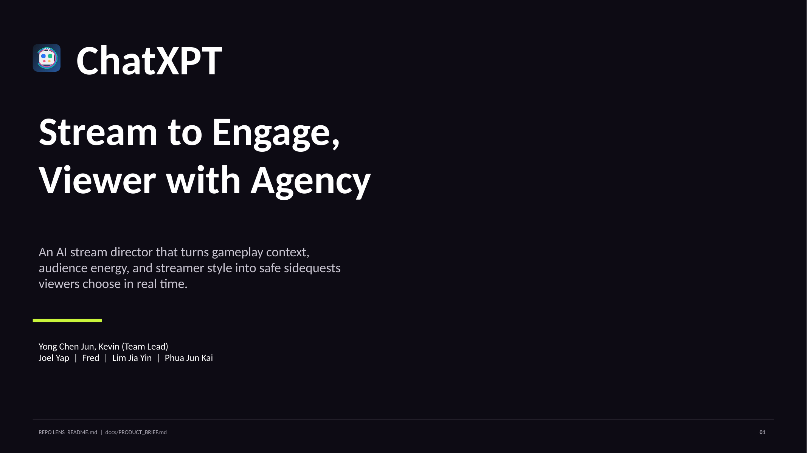
02 The struggle of small streamers
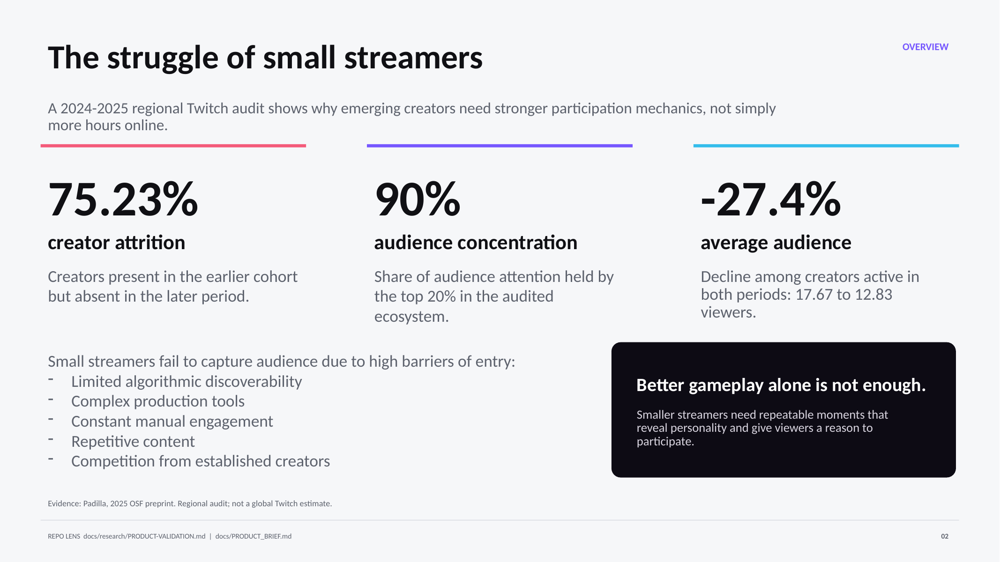
03 Engagement difficulties
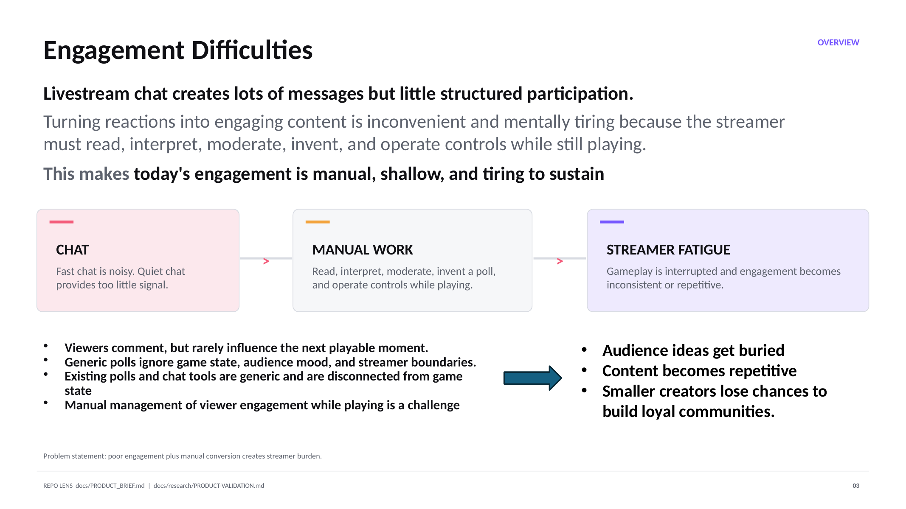
04 ChatXPT removes the manual burden
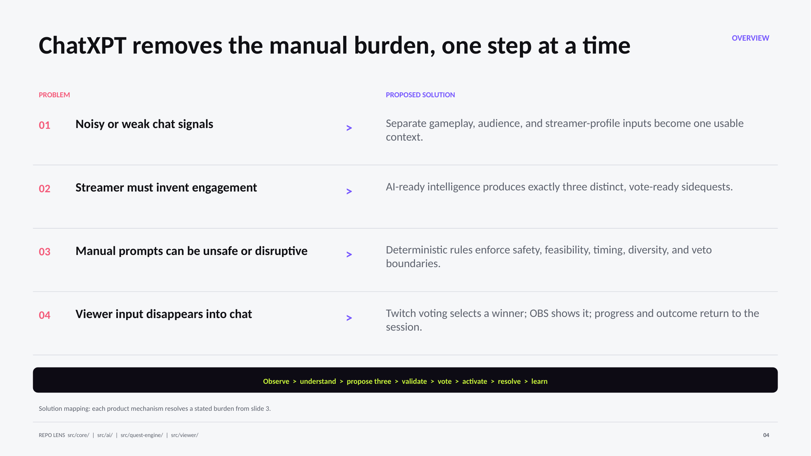
05 MVP scope
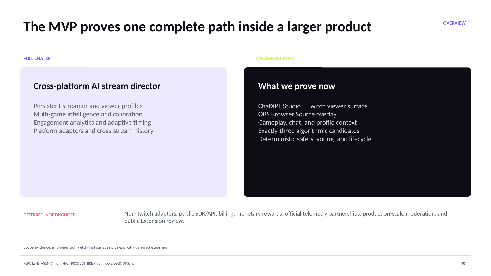
06 Twitch gives the MVP an interactive home
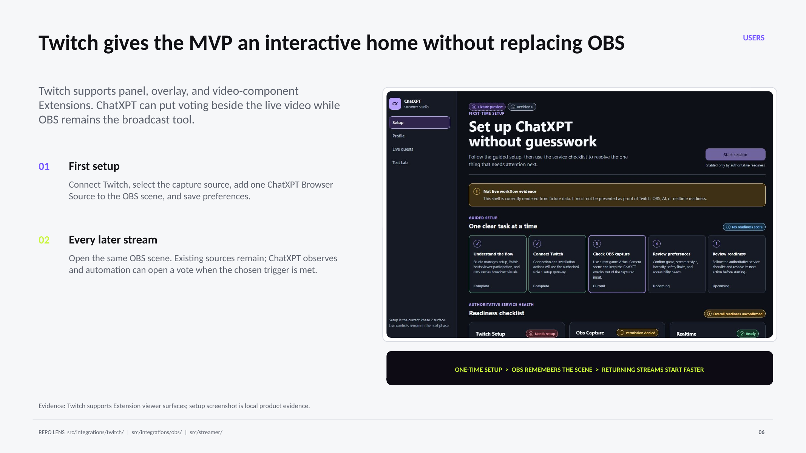
07 Streamers choose automation
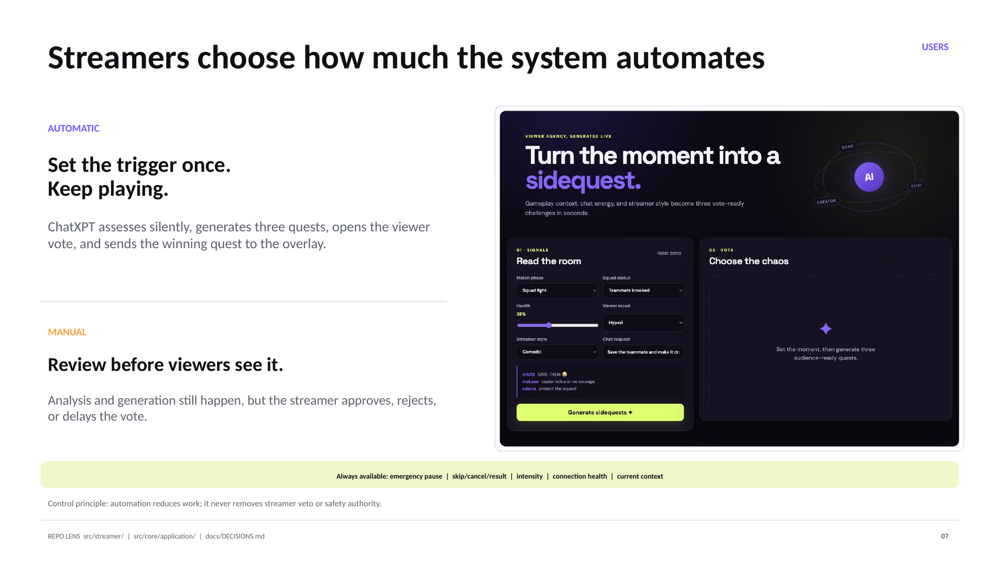
08 Streamer personality stays in the loop
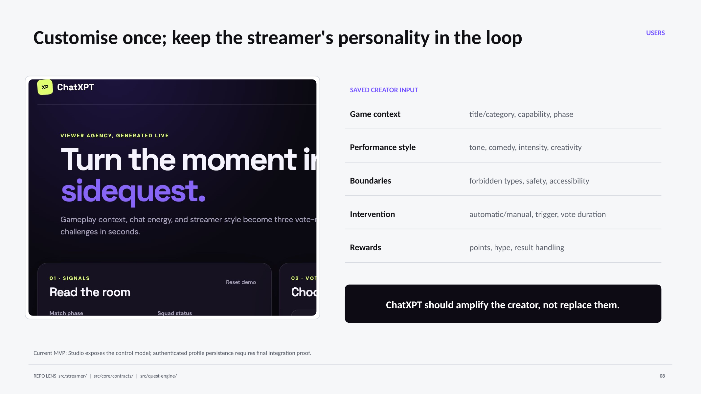
09 Viewer agency
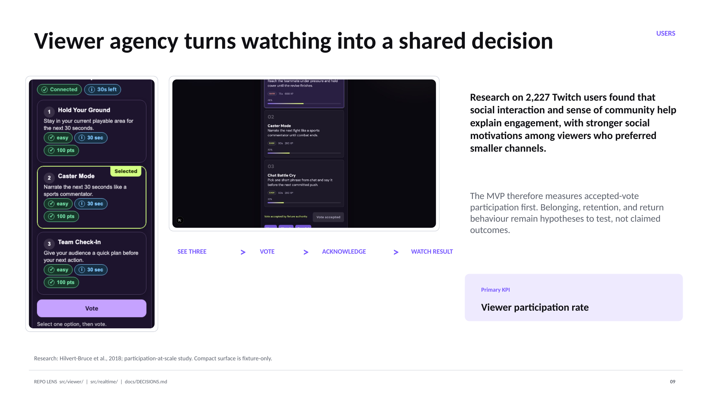
10 Ecosystem value
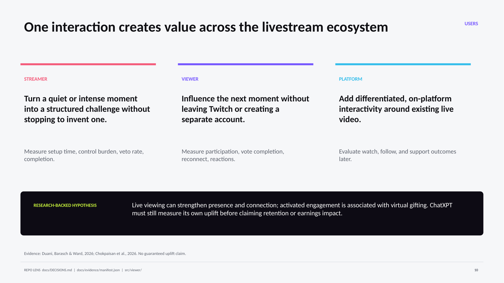
11 OBS intelligence
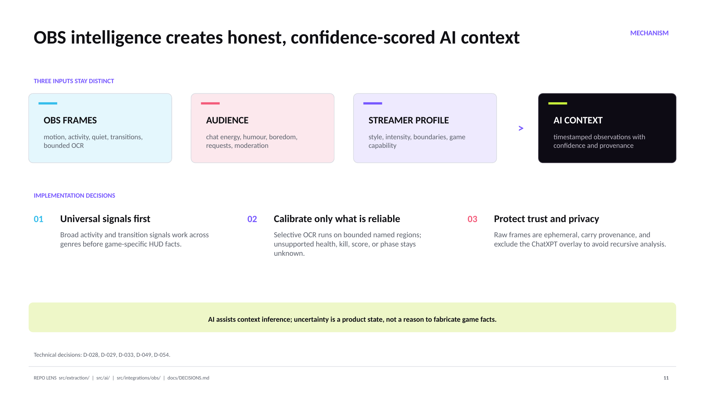
12 Candidate layer
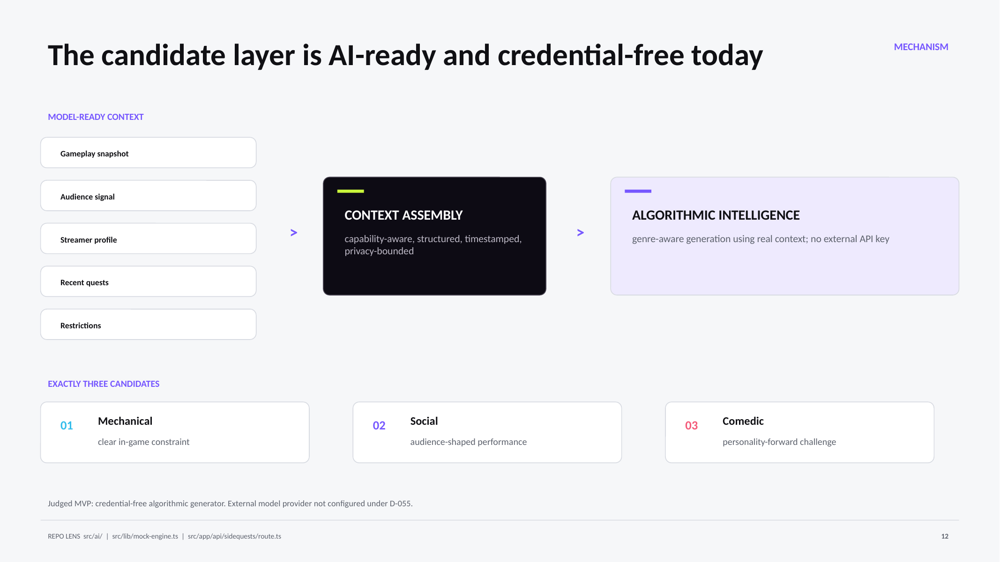
13 Quest engine
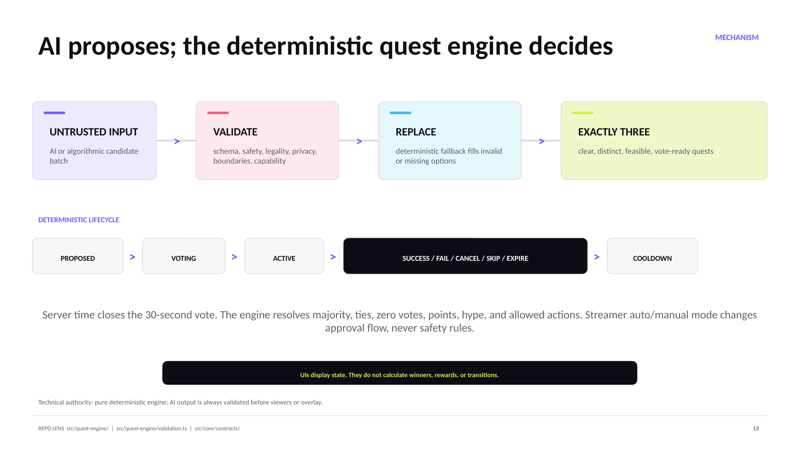
14 Authoritative architecture
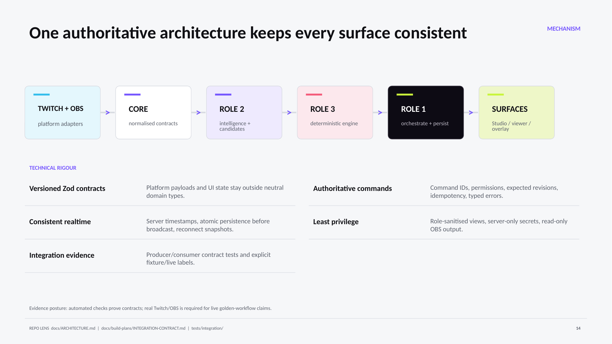
15 Future work
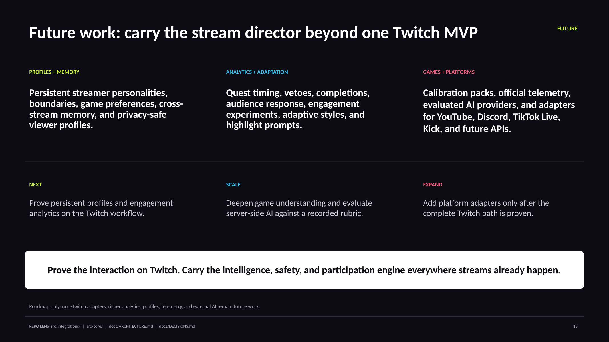